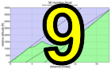

|
 |
 |

|
| Lisa Penzel climbs to the top woman's time (Cara Coburn) |
Ride data are still being uploaded, and won't be final until Monday night, but results here are those which were available as of 7 pm on Saturday. To upload results, use the upload page. Make sure you (the rider whose data are being uploaded) are logged into Strava before starting. The Strava login page is here.
It was gorgeous weather for Low-Keys week to get dirty on Montara Mountain. Riders had the option of riding whenever they chose, but habits die hard, and there was a solid group starting the climb near the normal 10:10 am Low-Key starting time.
In the men's standings, David Collet absolutely crushed the climb, taking over 2 minutes off Tim Clark's already impressive KOM, with Strava/Marc Pro's Sisters and Misters of No Mercy's Keith Hillier second just 4.82 seconds back. Third it was Carl Nielson continuing his late-season run at the Low-Key standings with an excellent climb, while Rob Nast was a close fourth.
On the women's side, it was a strong turn-out with four women logging results, and Sisters and Misters Holly Harris riding the hill strongly on her own. The top time was Low-Key's women's leader Lisa Penzel, doing her first mountain bike ride after an extended break. Janet Gardner, Trish Pacheco, and Kate Bergeron also put in very strong rides.
For the juniors, it was David's son Trevor Collet taking the category win for the day. He rode a strong climb and still looked fresh at the finish.
Montara marked the 2013 Low-Key debut of Gary "the" Gellin, who absolutely blitzed the climb in a time which would have ranked near the top of the solo rider standing. Sean Handel also put in an impressive run for second on the day, with Kyle Rudolph third overall and first in the women. Gary added to an already crazy strong Sisters and Misters team to give that squad a dominating victory in the day's standings, scoring an amazing 395 points with all three scoring riders breaking either the Strava KOM or the Strava CR (running) for the climb. It was a strong day for runners, with five overall, along with Bill Bushnell hiking the climb.
A strong reason for dirt climbs having a place in the series is they mix things up, add interest, and reward versaility. And to that goal Montara was a resounding success. David's blitzing climb moved him to first in the overall rankings, a position he is in strong position to hold at the finale of Mount Hamilton. And in the team standings, with deja vu back to 2011, Sisters and Misters has made a late rush of the top podium spot, passing the Brown Zone with only Hamilton remaining.
In all, 52 people uploaded rides for Montara, making it the most popular dirt climb Low-Key has done so far. Thanks to all who came out and contributed to this success.
Additionally thanks to all of our photographers today for documenting this climb. And make sure to check out the split times, always a feature of GPS-timed weeks.
KOM special mention qualifiers indicated with orange background. Discarded scores are crossed out. Volunteer weeks are indicated with V. Ride credit weeks are indicated with RC. V and RC weeks are equivalent for scoring.
| pl | # | name | team | cat | time | mph | fph | score |
|---|---|---|---|---|---|---|---|---|
| 1 | 126 | Lisa Penzel | The Brown Zone | 45+ | 36:12.51 | 6.23 | 2926 | 110.53 |
| 2 | 209 | Janet Gardner | Sr's & Mr's of No Mercy | 45+ | 37:32.73 | 6.01 | 2822 | 106.90 |
| 3 | 318 | Trish Pacheco | Sr's & Mr's of No Mercy | 45+ | 41:36.11 | 5.42 | 2547 | 97.27 |
| 4 | 804 | Holly Harris | Sr's & Mr's of No Mercy | Women 50+ | 42:52.01 | 5.26 | 2472 | 94.63 |
| 5 | 27 | Kate Bergeron | Diablo | 40+ | 42:54.51 | 5.26 | 2469 | 94.54 |
reference time for division Women = 40:22.24
| pl | # | name | team | cat | time | mph | fph | score |
|---|---|---|---|---|---|---|---|---|
| 1 | 49 | David Collet | Pen Velo/Pomodoro | 40+ | 24:09.61 | 9.34 | 4386 | 134.97 |
| 2 | 805 | Keith Hillier | Sr's & Mr's of No Mercy | 25+ | 24:14.43 | 9.31 | 4371 | 134.56 |
| 3 | 216 | Carl Nielson | Sr's & Mr's of No Mercy | 50+ | 26:22.47 | 8.55 | 4018 | 124.51 |
| 4 | 119 | Rob Nast | 50+ | 26:32.20 | 8.50 | 3993 | 123.81 | |
| 5 | 409 | Bill Laddish | Team CVC | 40+ | 27:00.86 | 8.35 | 3922 | 121.79 |
| 6 | 132 | Stefano Profumo | Bike Trip/Symantec | 35+ | 27:35.35 | 8.18 | 3841 | 119.45 |
| 7 | 410 | Paul McKenzie | Sr's & Mr's of No Mercy | 55+ | 27:52.61 | 8.09 | 3801 | 118.32 |
| 8 | 112 | Miro Miklos | 30+ | 29:13.17 | 7.72 | 3626 | 113.30 | |
| 9 | 152 | Daryl Spano | San Jose Bike Club | 45+ | 29:20.28 | 7.69 | 3612 | 112.88 |
| 10 | 214 | Alexander Komlik | San Jose Bike Club | 45+ | 29:46.36 | 7.58 | 3559 | 111.37 |
| 11 | 811 | Ben Weir | Western Wheelers | 30+ | 30:06.23 | 7.49 | 3520 | 110.24 |
| 12 | 810 | Ross Tinline | Pen Velo/Pomodoro | 50+ | 30:20.38 | 7.44 | 3492 | 109.45 |
| 13 | 327 | Brandon Smith | Team CVC | 25+ | 30:36.25 | 7.37 | 3462 | 108.58 |
| 14 | 514 | John Koslosky | Team CVC | 45+ | 30:46.15 | 7.33 | 3444 | 108.04 |
| 15 | 405 | Bruce Gardner | Sr's & Mr's of No Mercy | 40+ | 30:50.86 | 7.31 | 3435 | 107.79 |
| 16 | 156 | Todd Studenicka | San Jose Bike Club | 45+ | 31:32.94 | 7.15 | 3359 | 105.58 |
| 17 | 411 | Lucas Pereira | 40+ | 32:04.11 | 7.03 | 3304 | 104.01 | |
| 18 | 95 | Mark King | Equipe Flamme Rouge | 45+ | 32:09.17 | 7.02 | 3296 | 103.76 |
| 19 | 46 | Paul Chuck | Sr's & Mr's of No Mercy | 55+ | 33:22.71 | 6.76 | 3174 | 100.24 |
| 20 | 122 | Bart Niechwiej | 35+ | 33:25.71 | 6.75 | 3170 | 100.11 | |
| 21 | 809 | David Stockwell | San Jose Bike Club | 55+ | 33:29.91 | 6.73 | 3163 | 99.91 |
| 22 | 212 | Peter Ingram | Steely Man | 55+ | 33:31.45 | 6.73 | 3161 | 99.84 |
| 23 | 15 | Kevin Comerford | Sr's & Mr's of No Mercy | 35+ | 33:31.69 | 6.73 | 3160 | 99.83 |
| 24 | 127 | Ramon Periquet | Team CVC | 50+ | 33:43.92 | 6.69 | 3141 | 99.28 |
| 25 | 523 | Bob Scott | Pen Velo/Pomodoro | Male 40+ | 33:44.57 | 6.69 | 3140 | 99.25 |
| 26 | 1 | Daniel Connelly | Low-Key | 45+ | 33:59.60 | 6.64 | 3117 | 98.57 |
| 27 | 23 | Daniel Aminzade | 30+ | 34:10.30 | 6.60 | 3101 | 98.10 | |
| 28 | 302 | Michael Busha | Diablo | 30+ | 34:46.32 | 6.49 | 3047 | 96.54 |
| 29 | 138 | Doug Reynolds | Nightriders | 60+ | 35:36.23 | 6.34 | 2976 | 94.46 |
| 30 | 326 | Jeff Shute | 35+ | 37:04.40 | 6.09 | 2858 | 91.01 | |
| 31 | 125 | Frank Paysen | autonomous masochist | 50+ | 38:42.55 | 5.83 | 2737 | 87.47 |
| 32 | 56 | Richard Contreras | Rhus | 38:50.59 | 5.81 | 2728 | 87.19 | |
| 33 | 94 | Franz Kelsch | Nightriders | 65+ | 39:12.88 | 5.75 | 2702 | 86.43 |
| 34 | 801 | Boris Foelsch | Sr's & Mr's of No Mercy | Weak But Willing | 39:22.84 | 5.73 | 2691 | 86.09 |
| 35 | 71 | Stephen Fong | CyclePath Racing | 0 | 40:35.48 | 5.56 | 2610 | 83.73 |
| 36 | 205 | Frank Drobot | Team Djament | 60+ | 40:49.90 | 5.53 | 2595 | 83.27 |
| 37 | 800 | Trevor Collet | Pen Velo/Pomodoro | Junior 13 | 43:04.55 | 5.24 | 2460 | 79.27 |
| 38 | 130 | Mark Powers | Pen Velo/Pomodoro | 55+ | 43:36.19 | 5.17 | 2430 | 78.39 |
| 39 | 812 | Stephen Wilcox | 44:07.42 | 5.11 | 2401 | 77.54 | ||
| 40 | 133 | Alec Proudfoot | DaSH | 50+ | 50:35.73 | 4.46 | 2094 | 68.36 |
reference time for division Men = 33:28.04
| pl | # | name | team | cat | time | mph | fph | score |
|---|---|---|---|---|---|---|---|---|
| 1 | 802 | Gary Gellin | Sr's & Mr's of No Mercy | 27:53.61 | 8.09 | 3799 | 133.28 | |
| 2 | 803 | Sean Handel | 30:33.07 | 7.38 | 3468 | 122.57 | ||
| 3 | 807 | Kyle Rudolph | Team CVC | Runner? | 38:51.17 | 5.81 | 2727 | 98.25 |
| 4 | 808 | Stephen Wilcox Runner | 39:01.78 | 5.78 | 2715 | 97.84 | ||
| 5 | 6 | Bill Bushnell | Low-Key | Hors | 55:35.67 | 4.06 | 1906 | 70.65 |
reference time for division Male Runner = 33:28.04
| pl | # | name | team | cat | time | mph | fph | score |
|---|---|---|---|---|---|---|---|---|
| 1 | 806 | Casey Roberts | Team CVC | Runner | 44:45.63 | 5.04 | 2367 | 102.49 |
reference time for division Female Runner = 40:22.24
| pl | team | score | riders |
|---|---|---|---|
| 1 | Sr's & Mr's of No Mercy | 392.34 | Holly Harris, Janet Gardner, Trish Pacheco, Boris Foelsch, Bruce Gardner, Carl Nielson, Keith Hillier, Kevin Comerford, Paul Chuck, Paul McKenzie, Gary Gellin |
| 2 | Pen Velo/Pomodoro | 343.67 | Bob Scott, David Collet, Mark Powers, Ross Tinline, Trevor Collet |
| 3 | Team CVC | 338.41 | Bill Laddish, Brandon Smith, John Koslosky, Ramon Periquet, Kyle Rudolph, Casey Roberts |
| 4 | San Jose Bike Club | 329.83 | Alexander Komlik, Daryl Spano, David Stockwell, Todd Studenicka |
| 5 | 302.21 | Bart Niechwiej, Daniel Aminzade, Jeff Shute, Lucas Pereira | |
| 6 | Diablo | 191.09 | Kate Bergeron, Michael Busha |
| 7 | Nightriders | 180.89 | Doug Reynolds, Franz Kelsch |
| 8 | Low-Key | 169.23 | Daniel Connelly, Bill Bushnell |
| 9 | Bike Trip/Symantec | 119.45 | Stefano Profumo |
| 10 | The Brown Zone | 110.53 | Lisa Penzel |
| 11 | Western Wheelers | 110.24 | Ben Weir |
| 12 | Equipe Flamme Rouge | 103.76 | Mark King |
| 13 | Steely Man | 99.84 | Peter Ingram |
| 14 | autonomous masochist | 87.47 | Frank Paysen |
| 15 | Rhus | 87.19 | Richard Contreras |
| 16 | CyclePath Racing | 83.73 | Stephen Fong |
| 17 | Team Djament | 83.27 | Frank Drobot |
| 18 | DaSH | 68.36 | Alec Proudfoot |